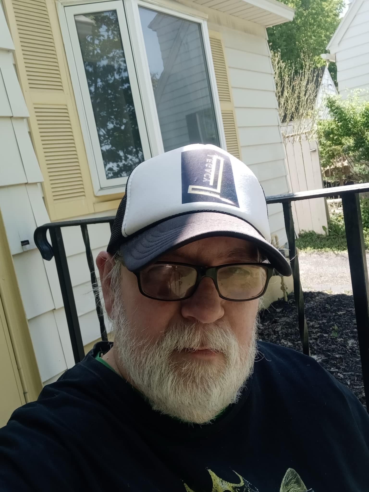

Mark Morrison-Lemay
Poet | Photographer | Talent Organizer
From Syracuse, New York, Mark is a versatile artist known for his evocative poetry and captivating photography. His personal work delves into themes of connection, observation, and the beauty found in everyday moments.
Legacy Artist Productions
As the driving force behind Legacy Artist Productions, Mark is dedicated to uniting and promoting talented musicians and artists across Syracuse and Utica, NY. His work fosters a collaborative environment, creating opportunities for local creatives to showcase their unique voices and build a stronger artistic community.